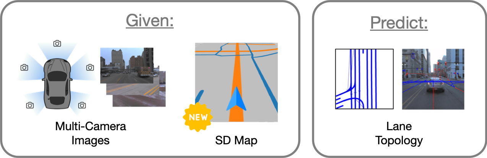
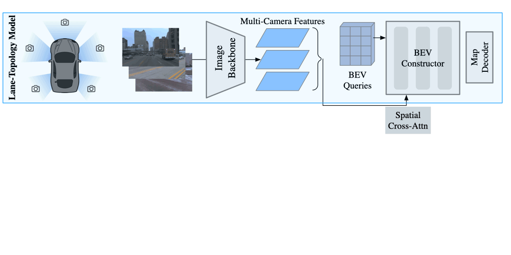

| Code | Paper | Video | Supplementary |
In order for self-driving to plan safe routes, they need to understand the topology of the road. In this work, we tackle the lane-topology task, which aims to predict lane centerlines and relationships between each other and traffic elements. We introduce a novel framework that leverages Standard Definition (SD) maps for real-time lane topology prediction in autonomous driving. By integrating SD maps into online map prediction with our Transformer-based embedding, we've significantly improved lane detection and topology prediction by up to 60%, marking a substantial advancement in this field. To the best of our knowledge, SMERF (SD Map Encoder Representations from transFormers) is the first work to leverage SD maps for map prediction.

SD maps include crucial information for road topology which can complement onboard cameras for lane-topology reasoning. For example, intersections that are not visible in the camera images due to occlusion can be seen in an SD map instead. In the SD map, orange lines represent roads and teal lines represent walkways.
Our task is to detect the lane centerlines of the road and the traffic elements of the scene such as the traffic lights and stop signs, as well as infer the connectivity of the lane centerlines and how they relate to each traffic element. In contrast with prior work, we additionally assume that we have access to the SD map of the region, queried using an onboard GPS system.

The proposed SMERF (lower half) augments an existing lane-topology model (upper half) with priors from SD maps in order to better detect lane centerlines and relational reasoning. There are three key components, as shown in above figure.
We compare the baseline model from openlane-v2 with and without our method, SMERF applied. Observe that adding the SD map as a prior improves far away lane recognition, since such information is present in the map but not in the images. The areas marked by red arrows show that adding SMERF improves lane-topology performance.
This effect is observed across models; we visualize the comparison between Toponet with and without SMERF.
If this work is helpful for your research, please consider citing us!
@article{luo2023augmenting,
title={Augmenting Lane Perception and Topology Understanding with Standard Definition Navigation Maps},
author={Luo, Katie Z and Weng, Xinshuo and Wang, Yan and Wu, Shuang and Li, Jie and Weinberger, Kilian Q and Wang, Yue and Pavone, Marco},
journal={arXiv preprint arXiv:2311.04079},
year={2023}
}